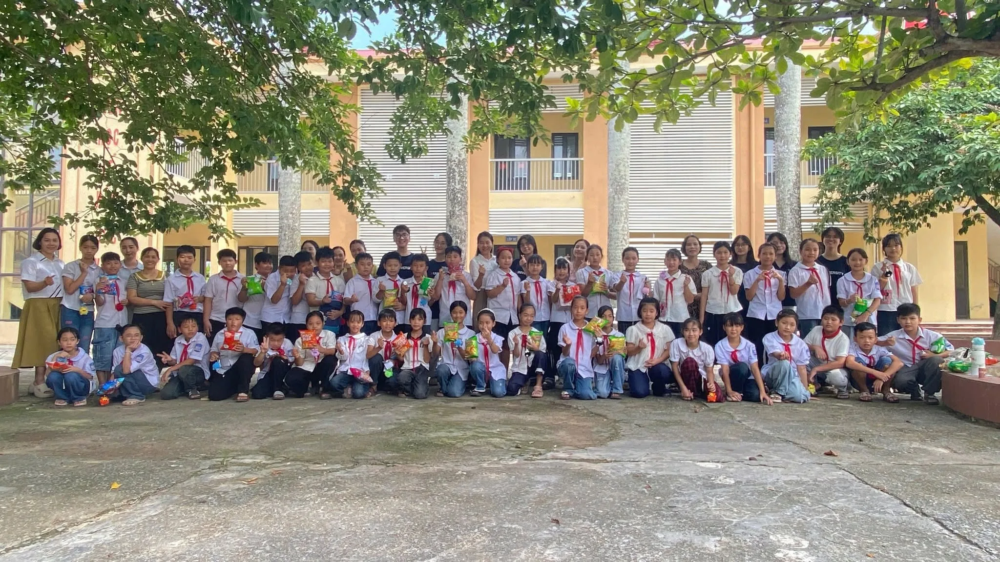
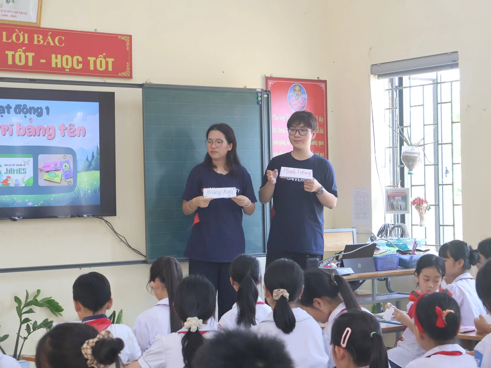
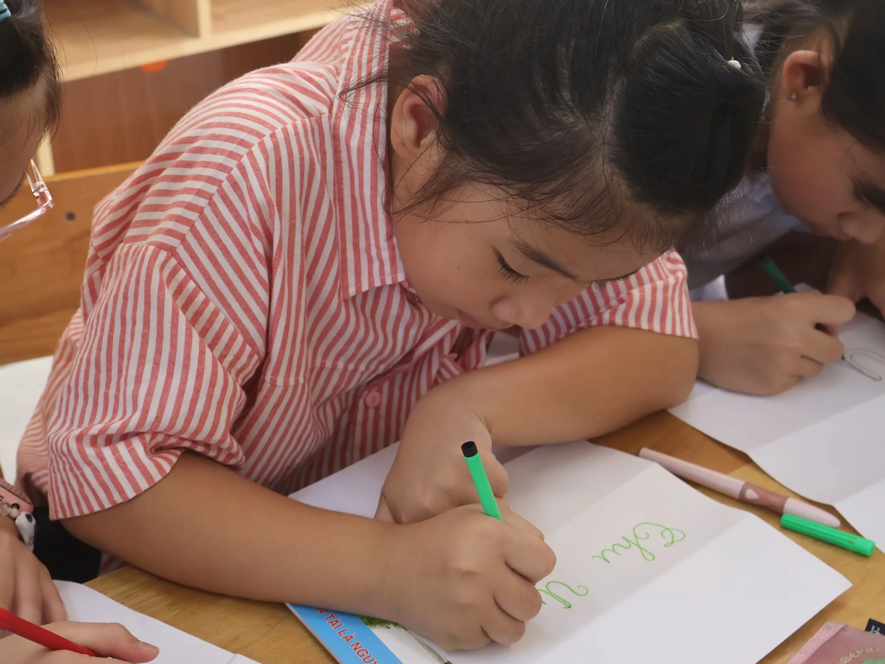

bạn nhỏ cùng tạo nên mùa hè này
TRẠI HÈ NGÔN NGỮ & NGHỆ THUẬT · 2026
Một mùa hè, nhiều tiếng nói tự tin hơn.
Một tuần học tập, trải nghiệm và sẻ chia khép lại — nhưng tiếng cười, tiếng hát và niềm tin “Mình có thể” vẫn còn ở lại.
Xem hành trình ↘Hung Dao Primary & Secondary School · August 2026

NO. 2026
buổi sáng học, thực hành và kết nối
ngày hội khép lại bằng những tiết mục rạng rỡ
01
CHƯƠNG 01 · HỌC, LẮNG NGHE, THỬ SỨC
Từ một âm tiết đến một bước tiến dũng cảm.
Những giờ học không chỉ xoay quanh việc phát âm đúng. Mỗi lần giơ tay, mỗi bài tập được hoàn thành và mỗi cuộc trò chuyện đều là một cơ hội để học sinh khám phá tiếng nói của chính mình.


“Điều đẹp nhất không phải là các em phát âm được bao nhiêu từ. Đó là khoảnh khắc các em dám nói.”
02
CHƯƠNG 02 · AI VÀ SỰ DẪN DẮT CỦA CON NGƯỜI
AI có thể mở rộng lớp học. Người thầy mới tạo nên hành trình.
AI đang thay đổi cách chúng ta học: gợi ý bài luyện tập phù hợp hơn, phản hồi nhanh hơn và mở ra nhiều cách để khám phá. Nhưng AI không thay thế được ánh mắt động viên, sự kiên nhẫn hay khả năng nhìn thấy tiềm năng riêng của mỗi đứa trẻ.
AI giúp việc thực hành trở nên linh hoạt và cá nhân hóa hơn.
Người dạy vẫn là người đặt câu hỏi, tạo an toàn và nuôi dưỡng niềm tin.
Khi công nghệ và sự quan tâm gặp nhau, nhiều điều tốt hơn có thể diễn ra.
NHẬT KÝ HÌNH ẢNH
42 khoảnh khắc. Một ký ức chung.
Tất cả hình ảnh dưới đây là tư liệu gốc do chương trình cung cấp, được sắp xếp lại để kể trọn hành trình từ lớp học đến những nụ cười cuối ngày.
MONTAGE ẢNH
Ảnh kể lại một mùa hè.
CHƯƠNG CUỐI · CẢM ƠN
Đằng sau mỗi nụ cười là một vòng tay đồng hành.
Trường TH & THCS Hưng Đạo trân trọng cảm ơn VinUniversity, nhóm nghiên cứu, các giảng viên, nghiên cứu sinh, sinh viên, đội ngũ tình nguyện viên và phụ huynh. Cảm ơn 50 bạn nhỏ — những nhân vật chính của hành trình này.